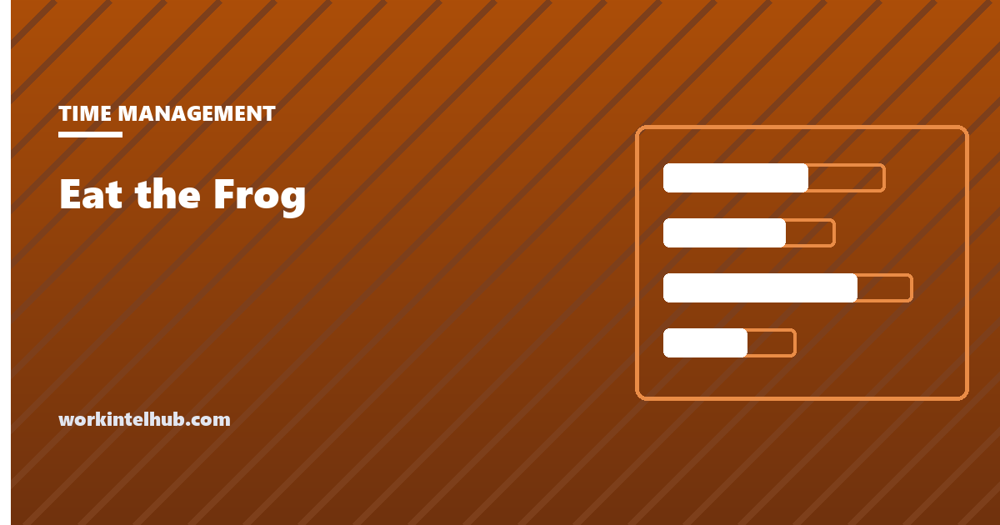

Eat the Frog

Eat the frog is a prioritisation method with one rule: identify the most important and most resisted task of the day, and do it first, before email, before meetings and before anything easier gets a chance to fill the morning.
It is usually introduced with a Mark Twain quote. Twain never said it. The method still works, for a specific kind of task and a specific kind of person, and this page is about telling those apart.
Find today's frog
The frog is the task with the highest impact; dread breaks ties, because the more you are avoiding it the more it will cost to keep avoiding. Tasks with high dread and low impact are not frogs. They are candidates for deleting, and the list flags them.
Where the frog came from
The line "if it's your job to eat a frog, it's best to do it first thing in the morning" is attributed to Mark Twain on almost every page that mentions the method. Quote Investigator has found no evidence Twain said or wrote it. The idea traces to the French writer Nicolas Chamfort in the 1790s, whose version involved a toad, and reached English through translations in the 1850s. The Twain attribution appeared long after his death, and the method's name comes from Brian Tracy's 2001 book Eat That Frog!, which popularised both the technique and the misattribution.
This matters for one reason: the method's authority rests on a folksy quote, and the quote is invented. What is left is a practical claim, that doing the hardest important thing first is better than doing it last, which can be tested on its own merits.
Why it works when it works
- It spends the best hours on the best task. For most people attention and willpower are highest early. Email spends them on other people's priorities.
- It removes the decision. Choosing what to do is itself effortful, and a day that begins with the decision already made starts faster.
- It ends the avoidance. A dreaded task avoided all day is worked on all day, in the background, at a cost. Done at 9:30, it stops charging rent.
- Everything after it is easier. The rest of the list looks different once the worst item is gone.
The mechanism is the same one behind time blocking: the first free block goes to the thing that matters, before anything louder can claim it. Eat the frog is a rule for choosing what goes in that block.
Choosing the right frog
The method fails most often at the selection step. Three common mistakes:
Confusing dread with importance. The task you least want to do is not automatically the one that matters most. The tool above scores both separately, and ranks on impact first. A high-dread, low-impact task is not a frog; it is a candidate for deleting, delegating or doing badly on purpose.
Picking a frog that is really a pond. "Write the strategy document" is not a morning's work. The frog has to be finishable in one sitting, or it has to be the first concrete step of something larger: "write the problem statement section", not "write the document".
Picking two. The whole point is a single item. If there are genuinely two, Tracy's own advice is to eat the bigger one first, and the second one becomes tomorrow's frog if it does not fit.
When eating the frog first is wrong
When the morning is not your best time. The method assumes early energy. For people whose focus peaks at 15:00, the frog belongs at 15:00, and a rigid morning rule wastes the peak on something else.
When the frog needs input you do not yet have. A task blocked on someone else's reply is not eaten by starting it; it is eaten by sending the request first thing and doing the work when the reply arrives.
When the job is reactive. A support lead or an operations manager whose 9:00 is the day's busiest hour cannot disappear into a frog. For them the method becomes: eat the frog in the first protected block, whenever that is.
When it becomes a way to avoid the pond. Some people eat a frog a day for a month and never touch the large, ambiguous project that actually matters, because it never fits a morning. Frogs are a tactic. The strategy is in the Eisenhower matrix, which is about which frogs exist at all, and in the wider set of methods in our time management techniques guide.
Key takeaways
- Eat the frog: do the most important, most resisted task first, before anything easier can fill the morning.
- The Mark Twain quote is invented. The idea traces to Chamfort in the 1790s and the name to Brian Tracy's 2001 book.
- Rank frogs on impact, with dread as the tiebreaker. High dread and low impact is a task to delete, not a frog.
- A frog must be finishable in one sitting. If the real task is a pond, the frog is its first concrete step.
- One frog. If there are two, eat the bigger one and the other becomes tomorrow's.
- Move the frog to your actual peak if that is not the morning, and to the first protected block if your job is reactive.
Frequently asked questions
What does eat the frog mean?
It means doing your most important and most resisted task first thing, before email or smaller jobs can take the morning. The frog is the task you would most like to avoid and would most benefit from finishing.
Did Mark Twain say eat a live frog?
No. Quote Investigator found no evidence Twain said or wrote it. The idea traces to the French writer Nicolas Chamfort in the 1790s, and the Twain attribution appeared decades after his death, popularised by Brian Tracy's 2001 book Eat That Frog.
How do I pick which task is the frog?
Rank tasks by impact first and use dread to break ties. The frog is the highest-impact task you are most avoiding, and it has to be something you can finish in one sitting. A task you dread that has little impact is not a frog; consider dropping it.
What if I have two frogs?
Eat the bigger one first. The method depends on a single clear priority, so the second becomes tomorrow's frog unless it fits comfortably after the first.
Does eat the frog work for everyone?
It works best for people whose energy peaks early and whose mornings can be protected. Night-focused people should move the frog to their peak, and people in reactive roles should eat it in their first protected block rather than at 9:00.
Is eat the frog the same as the Eisenhower matrix?
No. The Eisenhower matrix sorts all tasks by urgency and importance to decide what to do, schedule, delegate or drop. Eat the frog decides the order of the day once you know what matters. The matrix picks the frogs; the method eats them.